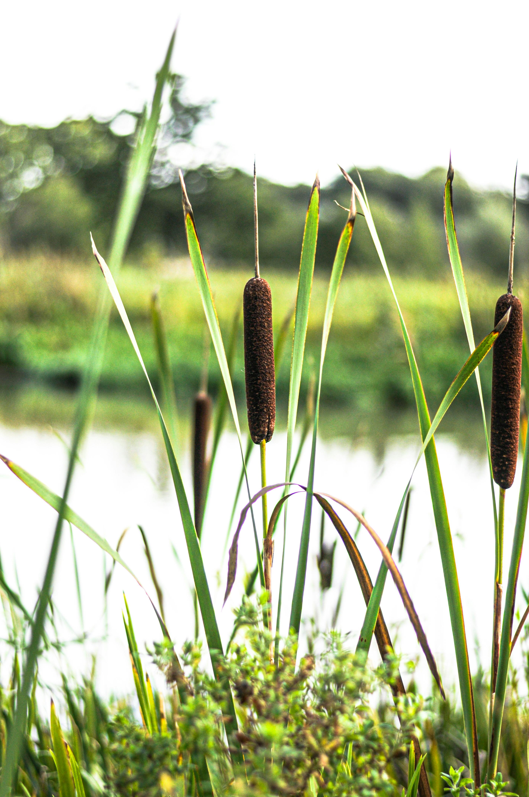
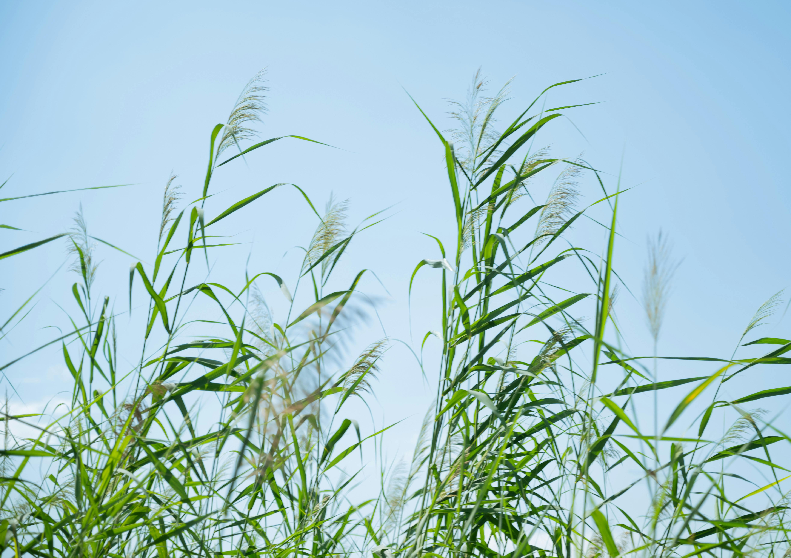
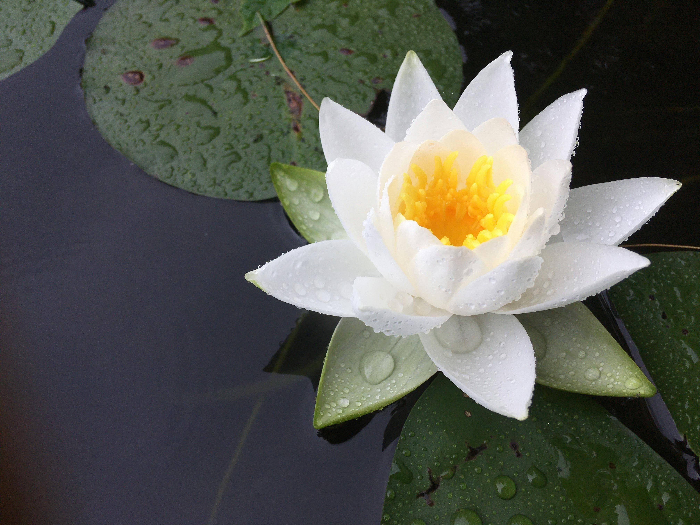
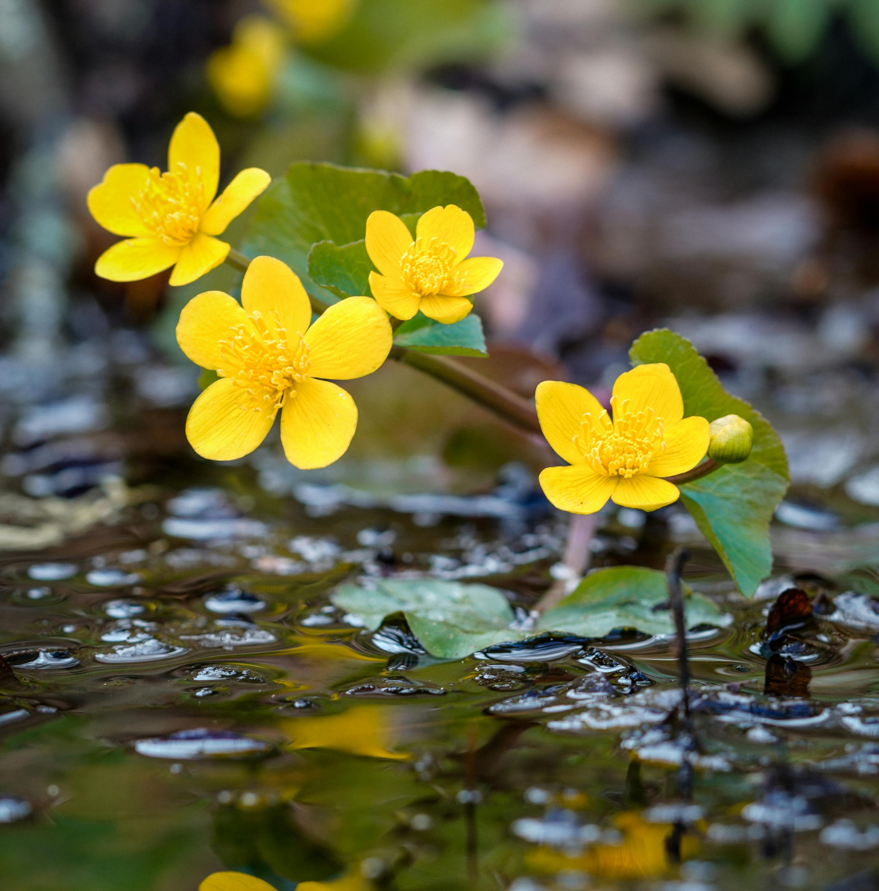
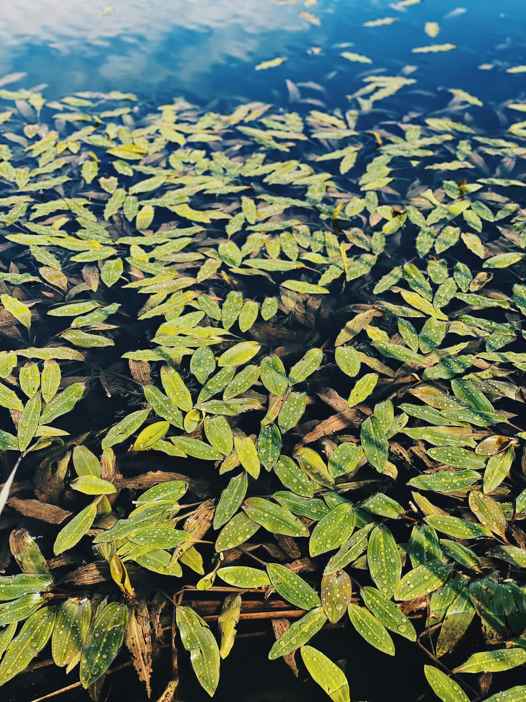
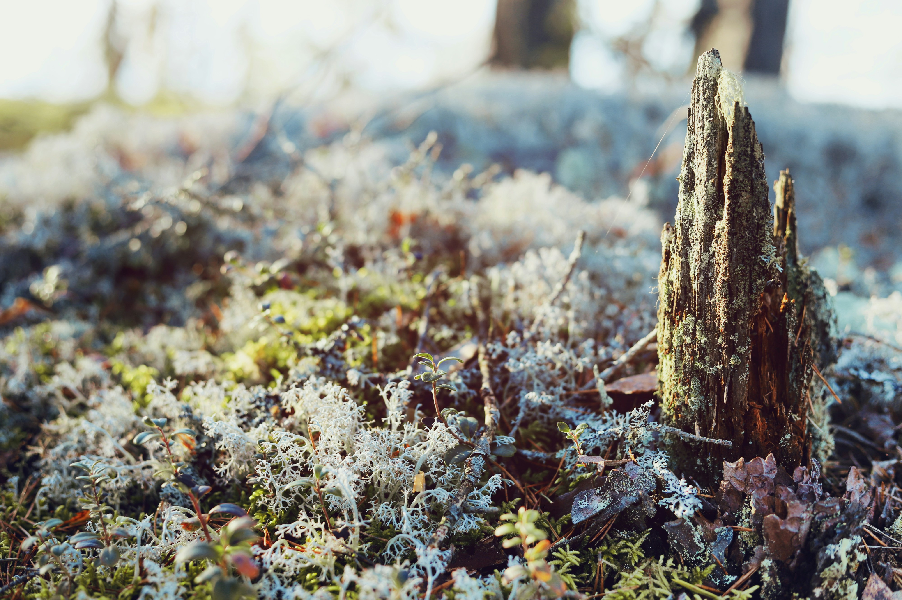

81 310 ha
Totalt exploaterad 2024
En undersökning om hur vägar, järnvägar och byggen påverkar våra mest värdefulla ekosystem.
Om exploatering → Om EU:s mål →Totalt exploaterad 2024
Exploaterat av vägar
Ökning sedan 2020
Föreställ dig en våtmark som en levande organism som andas in koldioxid och andas ut syre. Den filtrerar vatten och ger näring åt hundratals växt- och djurarter. När vi drar en väg rakt igenom är det som att skära av ett blodomlopp.
Våtmarker är ett av naturens viktigaste försvar mot klimatförändringar. De lagrar mer kol per kvadratmeter än de flesta skogar och fungerar som naturliga kolförråd. Samtidigt tar infrastrukturutvecklingen med vägar, järnvägar och bebyggelse allt större delar av denna värdefulla mark i anspråk.
Resultatet? Ökade utsläpp, sämre vattenreglering och förlorade livsmiljöer.

Växterna i en våtmark gör mycket mer än att bara växa där. De hjälper till att rena vatten genom att fånga upp näringsämnen och föroreningar, lagrar stora mängder kol i marken och bidrar till att minska effekterna av klimatförändringar. Samtidigt skapar de livsmiljöer för insekter, fåglar, groddjur och många andra arter som är beroende av våtmarkens unika miljö.
När våtmarker exploateras eller dräneras riskerar dessa viktiga växter att försvinna. Det påverkar inte bara enskilda arter utan kan få konsekvenser för hela ekosystemet. Genom att förstå växternas roll blir det tydligare varför skyddet av våtmarker är så viktigt för både naturen och människan.

Strandväxt
Kaveldun hjälper till att rena vatten och skapa livsmiljöer.
Växten binder näringsämnen och används ibland i restaurering av våtmarker.

Vattenväxt
Bladvass hjälper till att rena vatten och ger skydd åt fåglar.
Vitmossor kan hålla upp till 20 gånger sin egen vikt i vatten och är viktiga för torvbildning.

Flytväxt
Näckrosor skyddar fiskar och smådjur i lugna våtmarker.
De stora bladen skapar skugga i vattnet och ger skydd åt många vattenlevande arter.

Flytväxt
Kabbeleka blommar tidigt på våren i fuktiga marker.
Den starkt gula blomman är viktig för pollinatörer tidigt på säsongen.

Flytväxt
Gäddnate ger skydd åt fiskar och insekter.
Växten är viktig för syresättning och fungerar som livsmiljö för smådjur.

Myrväxt
Vitmossa lagrar stora mängder vatten.
Vitmossor kan hålla upp till 20 gånger sin egen vikt i vatten och är viktiga för torvbildning.